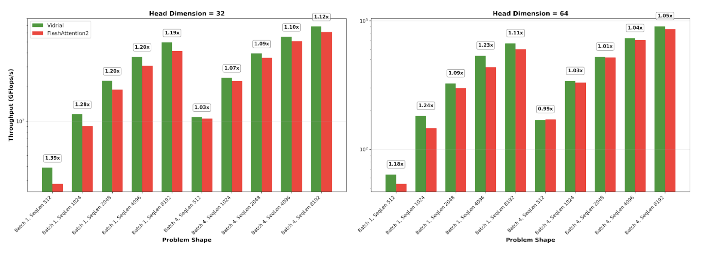
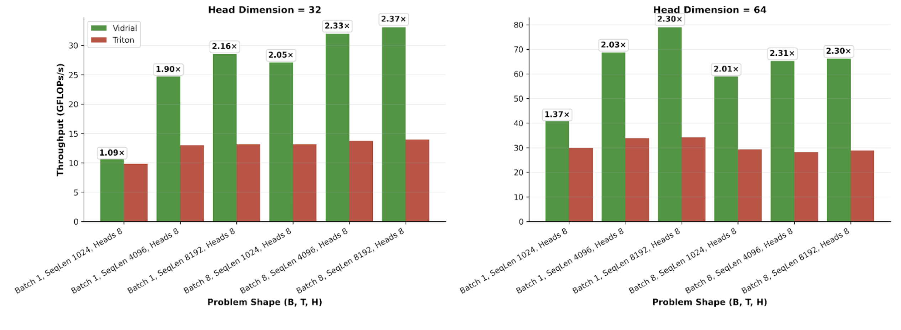
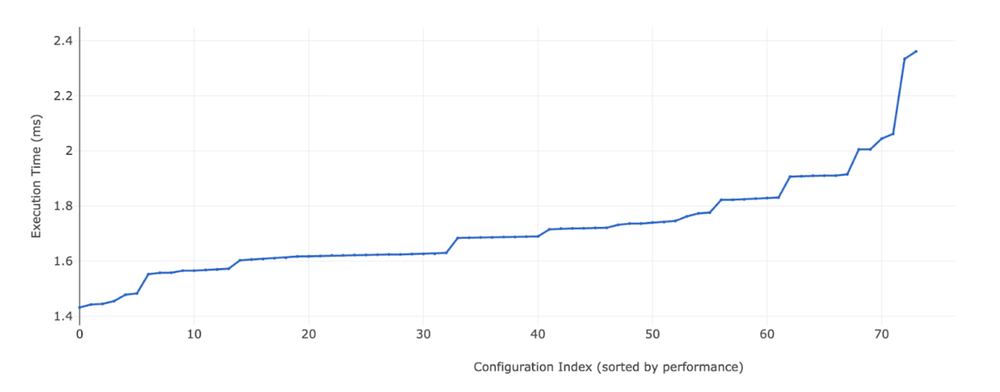

What Is Vidrial?
Vidrial is a set of tools for writing clean high-performance CUDA code. Kernels written with Vidrial are blazing fast, and are more readable, more extensible, and more testable than any other framework.
What is the Vidrial philosophy?
Vidrial is designed around two key ideas:
- Compile-time configuration via CuTe Layout manipulation.
- Systematic autotuning and testing from Python.
Kernels implemented in Vidrial are entirely structured around Layout manipulation. No pointer arithmetic is necessary: every memory movement is automatically derived from the configuration of the kernel, which includes choices around tile size/shape, number of threads per block, memory layout, scheduling strategy, etc. The configurations of a kernel represent all the different ways the GPU can perform that computation. Vidrial kernels can take advantage of this by autotuning, sweeping over the space of possible configurations to find the most efficient ones. (To contrast, vanilla CUDA kernels would typically require a manual rewrite for each new configuration.) Vidrial provides a friendly Python JIT framework for comfortable development, testing, and sweeping.
Are Vidrial kernels fast?
Yes. Since Vidrial builds on top of CUDA, it is fully expressive: any kernel that can be implemented in CUDA can be implemented in Vidrial. But thanks to the ability to tune per-problem on a wide sweep of configurations, Vidrial kernels are almost always faster. Here, we see that Vidrial is faster than FlashAttention2 on an H1001 for nearly every problem shape:

How does Vidrial differ from frameworks like Triton, Pallas, etc?
These frameworks operate at a higher level of abstraction than Vidrial, and so cannot express the full space of interesting kernels. For example, in Triton, the kernel author specifies operations over tensor tiles, and the Triton compiler lowers to PTX by making decisions around thread assignments. If the compiler does not choose wisely, these kernels will run many times slower than is optimal, and there is no way to correct this without abandoning Triton. In contrast, Vidrial gives the kernel author complete control of everything of which the GPU is capable. Here, we compare the performance of Triton and Vidrial implementations of a linear-cost attention alternative known as Power Retention [Gelada et al, 2025] on an H100, and see that Triton leaves ~2x performance on the table:

What do Vidrial kernels look like?
Vidrial code is minimalistic and clean. As an example, compare the two code blocks below, both of which describe a simple copy kernel: write a tensor tile in global memory into registers, then to shared memory, read them again, and finally write to global memory. A standard CuTe implementation appears on the left, and a Vidrial implementation on the right. The Vidrial kernel is not only cleaner, but also more generic, as it supports arbitrary layouts for both input and output while the CuTe kernel only supports transposition.
Expand for code
// CuTe Copy
#include <cuda_runtime.h>
#include <cute/tensor.hpp>
#include <cute/algorithm/copy.hpp>
template<
typename T,
int BLK_M, int BLK_N, // tile size in A
int THR_M, int THR_N // thread layout (THR_M * THR_N threads)
>
__global__ __launch_bounds__(THR_M * THR_N)
void g2r2s2r2g_copy(const T* __restrict__ A, int lda,
T* __restrict__ B, int ldb,
int M, int N) {
using namespace cute;
Tensor gA = make_tensor(make_gmem_ptr(A),
make_layout(make_shape(M, N), make_stride(lda, 1)));
Tensor gB = make_tensor(make_gmem_ptr(B),
make_layout(make_shape(N, M), make_stride(ldb, 1)));
auto gA_blk = local_tile(gA, make_shape(Int<BLK_M>{}, Int<BLK_N>{}),
make_coord(blockIdx.y, blockIdx.x));
auto gB_blk = local_tile(gB, make_shape(Int<BLK_N>{}, Int<BLK_M>{}),
make_coord(blockIdx.x, blockIdx.y));
extern __shared__ unsigned char __smem[];
T* smem_ptr = reinterpret_cast<T*>(__smem__);
Tensor sA = make_tensor(make_smem_ptr(smem_ptr),
make_layout(make_shape(Int<BLK_M>{}, Int<BLK_N>{}),
make_stride(Int<BLK_N>{}, Int<1>{})));
using ThrLayout = Layout<Shape<Int<THR_M>, Int<THR_N>>>;
auto tAgA = local_partition(gA_blk, ThrLayout{}, threadIdx.x);
auto tAsA = local_partition(sA, ThrLayout{}, threadIdx.x);
Tensor rA = make_fragment_like(tAgA);
copy(tAgA, rA);
copy(rA, tAsA);
__syncthreads();
Tensor sA_T = make_tensor(sA.data(),
make_layout(make_shape(Int<BLK_N>{}, Int<BLK_M>{}),
make_stride(Int<1>{}, Int<BLK_N>{})));
auto tAsA_T = local_partition(sA_T, ThrLayout{}, threadIdx.x);
Tensor rB = make_fragment_like(tAsA_T);
copy(tAsA_T, rB);
auto tBgB = local_partition(gB_blk, ThrLayout{}, threadIdx.x);
copy(rB, tBgB);
}// Vidrial Copy
#include <cuda_runtime.h>
#include "utilities.cuh"
#include "frg_copy.cuh"
template<typename T, typename Cfg1, typename Cfg2, typename SmemLayout>
__global__ void g2r2s2r2g_copy(Cfg1 cfg_global, Cfg2 cfg_shared, auto gA, SmemLayout smem_layout, auto gB) {
alignas(16) __shared__ T smem[size(smem_layout)];
auto sA = make_tensor(make_smem_ptr(smem), smem_layout);
auto frg = load(cfg_global, gA);
store(cfg_shared, frg, sA);
auto frg_reloaded = load(cfg_shared, sA);
store(cfg_global, frg_reloaded, gB);
}As a second example, here’s the implementation of softmax found in FlashAttention2 contrasted with an implementation in Vidrial.
Expand for code
// FlashAttention2 Softmax
template<bool Is_first, bool Check_inf=false, typename Tensor0, typename Tensor1>
__forceinline__ __device__ void softmax_rescale_o(Tensor0 &acc_s, Tensor1 &acc_o, float softmax_scale_log2) {
// Reshape acc_s from (MMA=4, MMA_M, MMA_N) to (nrow=(2, MMA_M), ncol=(2, MMA_N))
Tensor scores = make_tensor(acc_s.data(), flash::convert_layout_acc_rowcol(acc_s.layout()));
static_assert(decltype(size<0>(scores))::value == kNRows);
if (Is_first) {
flash::template reduce_max</*zero_init=*/true>(scores, row_max);
flash::scale_apply_exp2(scores, row_max, softmax_scale_log2);
flash::reduce_sum</*zero_init=*/true>(scores, row_sum);
} else {
Tensor scores_max_prev = make_fragment_like(row_max);
cute::copy(row_max, scores_max_prev);
flash::template reduce_max</*zero_init=*/false>(scores, row_max);
// Reshape acc_o from (MMA=4, MMA_M, MMA_K) to (nrow=(2, MMA_M), ncol=(2, MMA_K))
Tensor acc_o_rowcol = make_tensor(acc_o.data(), flash::convert_layout_acc_rowcol(acc_o.layout()));
static_assert(decltype(size<0>(acc_o_rowcol))::value == kNRows);
#pragma unroll
for (int mi = 0; mi < size(row_max); ++mi) {
float scores_max_cur = !Check_inf
? row_max(mi)
: (row_max(mi) == -INFINITY ? 0.0f : row_max(mi));
float scores_scale = exp2f((scores_max_prev(mi) - scores_max_cur) * softmax_scale_log2);
row_sum(mi) *= scores_scale;
#pragma unroll
for (int ni = 0; ni < size<1>(acc_o_rowcol); ++ni) { acc_o_rowcol(mi, ni) *= scores_scale; }
}
flash::scale_apply_exp2(scores, row_max, softmax_scale_log2);
// We don't do the reduce across threads here since we don't need to use the row_sum.
// We do that reduce at the end when we need to normalize the softmax.
flash::reduce_sum</*zero_init=*/false>(scores, row_sum);
}
};// Vidrial Softmax
CUTE_DEVICE void softmax_rescale(auto const& cfg, auto& frg, auto& rS_frg, auto& sRow, auto& rowmax_frg, auto& rowsum_frg) {
using T = TensorType(frg);
auto new_rowmax_frg = smart_reduce(cfg.reduce, frg, sRow, MaxOp<T>{});
auto rescaler_frg = new_rowmax_frg.compose(cfg.frg2rfrg);
if constexpr (cfg.log2)
tensor_scalar_prod(new_rowmax_frg, cfg.LOG2E);
dual_elementwise_tensor(MaxOp<T>{}, ExpDiffOp<cfg.log2, T>{}, rowmax_frg, new_rowmax_frg); // compute rescaler
elementwise_tensor(MulOp<T>{}, rS_frg, rescaler_frg); elementwise_tensor(MulOp<T>{}, rowsum_frg, new_rowmax_frg); elementwise_tensor(ExpFmaDiffOp<cfg.log2, cfg.scale, T>{}, frg, rowmax_frg.compose(cfg.frg2rfrg));
thread_reduce(cfg.reduce.thread_reduce, SumOp<T>{}, frg, rowsum_frg);
}What do Vidrial configurations look like?
Vidrial configurations are static, and encapsulate all static information (frequently CuTe Layouts) that a kernel will need at runtime. Since kernels are modular, most configurations are recursive. Here is an example of a configuration for flash attention:
Expand for code
using T = bfloat16_t;
using LT = float;
using Atom1 = MMA_Atom<SM80_16x8x16_F32BF16BF16F32_TN>;
using Atom2 = MMA_Atom<SM80_16x8x16_F32BF16BF16F32_TN>;
using MNKTileShape_1 = decltype(static_tree_cast<int64_t>(Shape<Int<128>, Int<64>, Int<64>>{}));
using NTile2 = decltype(static_tree_cast<int64_t>(Int<64>{}));
using MNKAtomPlacement_1 = decltype(static_tree_cast<int64_t>(Shape<Int<4>, Int<1>, Int<1>>{}));
using GQSlab = decltype(static_tree_cast<int64_t>(Layout<Shape<Int<8192>, Int<64>, Shape<Int<4>, Int<8>>>, Stride<Int<64>, Int<1>, Stride<Int<4194304>, Int<524288>>>>{}));
using GKSlab = decltype(static_tree_cast<int64_t>(Layout<Shape<Int<8192>, Int<64>, Shape<Int<4>, Int<8>>>, Stride<Int<64>, Int<1>, Stride<Int<4194304>, Int<524288>>>>{}));
using GVSlab = decltype(static_tree_cast<int64_t>(Layout<Shape<Int<64>, Int<8192>, Shape<Int<4>, Int<8>>>, Stride<Int<1>, Int<64>, Stride<Int<4194304>, Int<524288>>>>{}));
using GOSlab = decltype(static_tree_cast<int64_t>(Layout<Shape<Int<8192>, Int<64>, Shape<Int<4>, Int<8>>>, Stride<Int<64>, Int<1>, Stride<Int<4194304>, Int<524288>>>>{}));
using GLSlab = decltype(static_tree_cast<int64_t>(Layout<Shape<Int<8192>, Shape<Int<4>, Int<8>>>, Stride<Int<1>, Stride<Int<65536>, Int<8192>>>>{}));
using PerfCfg1 = FlashPerfCfg<2, 1, true, 1, true>;
using PerfCfg2 = PerfCfg<2, 2, true, 1>;
auto cfg = make_FlashKernelCfg<T, LT, Atom1, MNKTileShape_1, MNKAtomPlacement_1, Atom2, NTile2, GQSlab, GKSlab, GVSlab, GOSlab, GLSlab, PerfCfg1, PerfCfg2>();The power of Vidrial is that a small change in configuration can lead to a completely different computational structure. For example, by making the following small adjustment to the fifth line of the above configuration, the layouts of the resulting code are completely transformed:
Expand for diffs
Configuration:
-using MNKTileShape_1 = decltype(static_tree_cast<int64_t>(Shape<Int<128>, Int<64>, Int<64>>{}));
+using MNKTileShape_1 = decltype(static_tree_cast<int64_t>(Shape<Int<64>, Int<64>, Int<64>>{}));Code:
FlashKernelCfg:
mma1: MmaKernelCfg:
mma_Atom: MMA_Atom
ThrID: _32:_1
Shape_MNK: (_16,_8,_16)
LayoutA_TV: ((_4,_8),(_2,_2,_2)):((_32,_1),(_16,_8,_128))
LayoutB_TV: ((_4,_8),(_2,_2)):((_16,_1),(_8,_64))
LayoutC_TV: ((_4,_8),(_2,_2)):((_32,_1),(_16,_8))
MNKAtomPlacement: (_4,_1,_1)
- MNK_tile_shape: (_128,_64,_64)
+ MNK_tile_shape: (_64,_64,_64)
A.tile_copy: TileCopyCfg:
- A.tile_copy: TileShape: (_128,_64)
- A.tile_copy: GTile: (_128,_64):(_64,_1)
- A.tile_copy: STile: (_128,_64):(_64,_1)
- A.tile_copy: FrgThr: ((_8,_8,_1),(_8,_16)):((_128,_16,_0),(_1024,_1))
- A.tile_copy: Frg: (_8,_8,_1):(_1,_8,_0)
+ A.tile_copy: TileShape: (_64,_64)
+ A.tile_copy: GTile: (_64,_64):(_64,_1)
+ A.tile_copy: STile: (_64,_64):(_64,_1)
+ A.tile_copy: FrgThr: ((_8,_4,_1),(_8,_16)):((_64,_16,_0),(_512,_1))
+ A.tile_copy: Frg: (_8,_4,_1):(_1,_8,_0)
B.tile_copy: TileCopyCfg:
B.tile_copy: TileShape: (_64,_64)
B.tile_copy: GTile: (_64,_64):(_64,_1)
B.tile_copy: STile: (_64,_64):(_64,_1)
B.tile_copy: FrgThr: ((_8,_4,_1),(_8,_16)):((_64,_16,_0),(_512,_1))
B.tile_copy: Frg: (_8,_4,_1):(_1,_8,_0)
C.tile_copy: TileCopyCfg:
- C.tile_copy: TileShape: (_128,_64)
- C.tile_copy: GTile: (_128,_64):(_1,_8192)
- C.tile_copy: STile: (_128,_64):(_1,_128)
- C.tile_copy: FrgThr: ((_8,_1,_8),_128):((_1,_0,_1024),_8)
- C.tile_copy: Frg: (_8,_1,_8):(_1,_0,_8)
+ C.tile_copy: TileShape: (_64,_64)
+ C.tile_copy: GTile: (_64,_64):(_1,_8192)
+ C.tile_copy: STile: (_64,_64):(_1,_64)
+ C.tile_copy: FrgThr: ((_8,_1,_4),_128):((_1,_0,_1024),_8)
+ C.tile_copy: Frg: (_8,_1,_4):(_1,_0,_8)
- A.mma_FrgThr: (((_2,_2,_2),_2,_4),(_4,_8,(_4,_1,_1))):(((_128,_8,_1024),_64,_2048),(_256,_1,(_16,_0,_0)))
+ A.mma_FrgThr: (((_2,_2,_2),_1,_4),(_4,_8,(_4,_1,_1))):(((_64,_8,_512),_0,_1024),(_128,_1,(_16,_0,_0)))
B.mma_FrgThr: (((_2,_2),_8,_4),(_4,_8,(_4,_1,_1))):(((_64,_512),_8,_1024),(_128,_1,(_0,_0,_0)))
- C.mma_FrgThr: (((_2,_2),_2,_8),(_4,_8,(_4,_1,_1))):(((_128,_8),_64,_1024),(_256,_1,(_16,_0,_0)))
- A.sTile: Sw<3,3,3> o _0 o (_128,_64):(_64,_1)
+ C.mma_FrgThr: (((_2,_2),_1,_8),(_4,_8,(_4,_1,_1))):(((_64,_8),_0,_512),(_128,_1,(_16,_0,_0)))
+ A.sTile: Sw<3,3,3> o _0 o (_64,_64):(_64,_1)
B.sTile: Sw<3,3,3> o _0 o (_64,_64):(_64,_1)
- C.sTile: (_128,_64):(_1,_128)
+ C.sTile: (_64,_64):(_1,_64)
perf: FlashPerfCfg:
perf: smempipe: 2
perf: regpipe: 1
perf: use_ldsm: 1
perf: swizzle: 1
perf: q_in_reg: 1
mma2: MmaKernelCfg:
mma_Atom: MMA_Atom
ThrID: _32:_1
Shape_MNK: (_16,_8,_16)
LayoutA_TV: ((_4,_8),(_2,_2,_2)):((_32,_1),(_16,_8,_128))
LayoutB_TV: ((_4,_8),(_2,_2)):((_16,_1),(_8,_64))
LayoutC_TV: ((_4,_8),(_2,_2)):((_32,_1),(_16,_8))
MNKAtomPlacement: (_4,_1,_1)
- MNK_tile_shape: (_128,_64,_64)
+ MNK_tile_shape: (_64,_64,_64)
A.tile_copy: TileCopyCfg:
- A.tile_copy: TileShape: (_128,_64)
- A.tile_copy: GTile: (_128,_64):(_1,_8192)
- A.tile_copy: STile: (_128,_64):(_1,_128)
- A.tile_copy: FrgThr: ((_8,_1,_8),_128):((_1,_0,_1024),_8)
- A.tile_copy: Frg: (_8,_1,_8):(_1,_0,_8)
+ A.tile_copy: TileShape: (_64,_64)
+ A.tile_copy: GTile: (_64,_64):(_1,_8192)
+ A.tile_copy: STile: (_64,_64):(_1,_64)
+ A.tile_copy: FrgThr: ((_8,_1,_4),_128):((_1,_0,_1024),_8)
+ A.tile_copy: Frg: (_8,_1,_4):(_1,_0,_8)
B.tile_copy: TileCopyCfg:
B.tile_copy: TileShape: (_64,_64)
B.tile_copy: GTile: (_64,_64):(_1,_64)
B.tile_copy: STile: (_64,_64):(_1,_64)
B.tile_copy: FrgThr: ((_8,_1,_4),_128):((_1,_0,_1024),_8)
B.tile_copy: Frg: (_8,_1,_4):(_1,_0,_8)
C.tile_copy: TileCopyCfg:
- C.tile_copy: TileShape: (_128,_64)
- C.tile_copy: GTile: (_128,_64):(_64,_1)
- C.tile_copy: STile: (_128,_64):(_64,_1)
- C.tile_copy: FrgThr: ((_8,_8,_1),(_8,_16)):((_128,_16,_0),(_1024,_1))
- C.tile_copy: Frg: (_8,_8,_1):(_1,_8,_0)
+ C.tile_copy: TileShape: (_64,_64)
+ C.tile_copy: GTile: (_64,_64):(_64,_1)
+ C.tile_copy: STile: (_64,_64):(_64,_1)
+ C.tile_copy: FrgThr: ((_8,_4,_1),(_8,_16)):((_64,_16,_0),(_512,_1))
+ C.tile_copy: Frg: (_8,_4,_1):(_1,_8,_0)
- A.mma_FrgThr: (((_2,_2,_2),_2,_4),(_4,_8,(_4,_1,_1))):(((_128,_8,_1024),_64,_2048),(_256,_1,(_16,_0,_0)))
+ A.mma_FrgThr: (((_2,_2,_2),_1,_4),(_4,_8,(_4,_1,_1))):(((_64,_8,_512),_0,_1024),(_128,_1,(_16,_0,_0)))
B.mma_FrgThr: (((_2,_2),_8,_4),(_4,_8,(_4,_1,_1))):(((_64,_512),_8,_1024),(_128,_1,(_0,_0,_0)))
- C.mma_FrgThr: (((_2,_2),_2,_8),(_4,_8,(_4,_1,_1))):(((_128,_8),_64,_1024),(_256,_1,(_16,_0,_0)))
- A.sTile: Sw<3,3,3> o _0 o (_128,_64):(_1,_128)
+ C.mma_FrgThr: (((_2,_2),_1,_8),(_4,_8,(_4,_1,_1))):(((_64,_8),_0,_512),(_128,_1,(_16,_0,_0)))
+ A.sTile: Sw<3,3,3> o _0 o (_64,_64):(_1,_64)
B.sTile: Sw<3,3,3> o _0 o (_64,_64):(_1,_64)
- C.sTile: (_128,_64):(_64,_1)
+ C.sTile: (_64,_64):(_64,_1)
perf: PerfCfg:
perf: smempipe: 2
perf: regpipe: 2
perf: use_ldsm: 1
perf: swizzle: 1
mask: MaskCfg:
- frgthr_coord: (((_2,_2),_2,_8),(_4,_8,(_4,_1,_1))):(((_1@1,_8@0),_64@0,_8@1),(_2@1,_1@0,(_16@0,_0,_0)))
+ frgthr_coord: (((_2,_2),_1,_8),(_4,_8,(_4,_1,_1))):(((_1@1,_8@0),_0,_8@1),(_2@1,_1@0,(_16@0,_0,_0)))
pred: CausalMask
op: OpNegInf
softmax: SoftmaxCfg:
- tile_shape: (_128,_64)
- frgthr: (((_2,_2),_2,_8),(_4,_8,(_4,_1,_1))):(((_128,_8),_64,_1024),(_256,_1,(_16,_0,_0)))
+ tile_shape: (_64,_64)
+ frgthr: (((_2,_2),_1,_8),(_4,_8,(_4,_1,_1))):(((_64,_8),_0,_512),(_128,_1,(_16,_0,_0)))
reduce: SmartReduceCfg:
- reduce: X.shape: (_64,_128)
- reduce: X.frg_thr: (((_2,_2),_2,_8),(_4,_8,(_4,_1,_1))):(((_1,_512),_4096,_8),(_2,_64,(_1024,_0,_0)))
- reduce: X.frg_shape: ((_2,_2),_2,_8)
- reduce: x.shape: (_128)
- reduce: x.frg_thr: ((_2,_2),(_4,_8,_4)):((_8,_64),(_0,_1,_16))
- reduce: x.frg_shape: (_2,_2)
- reduce: A.shape: (_1,_128)
+ reduce: X.shape: (_64,_64)
+ reduce: X.frg_thr: (((_2,_2),_1,_8),(_4,_8,(_4,_1,_1))):(((_1,_512),_0,_8),(_2,_64,(_1024,_0,_0)))
+ reduce: X.frg_shape: ((_2,_2),_1,_8)
+ reduce: x.shape: (_64)
+ reduce: x.frg_thr: (_2,(_4,_8,_4)):(_8,(_0,_1,_16))
+ reduce: x.frg_shape: _2
+ reduce: A.shape: (_1,_64)
reduce: A.frg_tiling: FrgThrTilingCfg:
- reduce: A.frg_tiling: FrTh: ((_2,_2),(_4,_8,(_4,_1,_1))):((_8,_64),(_0,_1,(_16,_0,_0)))
- reduce: A.frg_tiling: frg_slicer: (_4,(_1,_1)):(_1,(_0,_0))
+ reduce: A.frg_tiling: FrTh: ((_2,_1),(_4,_8,(_4,_1,_1))):((_8,_0),(_0,_1,(_16,_0,_0)))
+ reduce: A.frg_tiling: frg_slicer: (_2,(_1,_1)):(_1,(_0,_0))
reduce: A.frg_tiling: Re2ThKey: (_1,_1):(_0,_0)
reduce: A.frg_tiling: Th2ThKey: (_4,_8,(_4,_1,_1)):(_0,_0,(_0,_0,_0))
- reduce: A.frg_tiling: tile_FrTh: ((_2,_2),(_4,_8,(_4,_1,_1))):((_8,_64),(_0,_1,(_16,_0,_0)))
+ reduce: A.frg_tiling: tile_FrTh: (_2,(_4,_8,(_4,_1,_1))):(_8,(_0,_1,(_16,_0,_0)))
reduce: warp_reduce_size: 1
reduce: skip_smem_reduce: 1
reduce: owning_thread_optimization: 0
reduce: thread_num: 128
reduce: thread_reduce: ThreadReduceCfg:
- reduce: thread_reduce: X_Shape: (_64,_128)
- reduce: thread_reduce: X_FrgThr: (((_2,_2),_2,_8),(_4,_8,(_4,_1,_1))):(((_1,_512),_4096,_8),(_2,_64,(_1024,_0,_0)))
- reduce: thread_reduce: x_Shape: (_4,_128)
- reduce: thread_reduce: x_FrgThr: ((_2,_2),(_4,_8,(_4,_1,_1))):((_32,_256),(_1,_4,(_64,_0,_0)))
- reduce: thread_reduce: canonical_frg: ((_2,_8),(_2,_2)):((_1,_8),(_2,_4))
- reduce: thread_reduce: X_2_x: ((_2,_4,_8),_128):((_0,_1,_0),_4)
- reduce: thread_reduce: x_FrgShape: (_2,_2)
+ reduce: thread_reduce: X_Shape: (_64,_64)
+ reduce: thread_reduce: X_FrgThr: (((_2,_2),_1,_8),(_4,_8,(_4,_1,_1))):(((_1,_512),_0,_8),(_2,_64,(_1024,_0,_0)))
+ reduce: thread_reduce: x_Shape: (_4,_64)
+ reduce: thread_reduce: x_FrgThr: ((_2,_1),(_4,_8,(_4,_1,_1))):((_32,_0),(_1,_4,(_64,_0,_0)))
+ reduce: thread_reduce: canonical_frg: ((_2,_1,_8),(_2,_1)):((_1,_0,_4),(_2,_0))
+ reduce: thread_reduce: X_2_x: ((_2,_4,_8),_64):((_0,_1,_0),_4)
+ reduce: thread_reduce: x_FrgShape: (_2,_1)
reduce: warp_reduce: WarpReduceCfg:
- reduce: warp_reduce: X_Shape: (_4,_128)
- reduce: warp_reduce: X_FrgThr: ((_2,_2),(_4,_8,(_4,_1,_1))):((_32,_256),(_1,_4,(_64,_0,_0)))
- reduce: warp_reduce: x_Shape: (_1,_128)
- reduce: warp_reduce: x_FrgThr: ((_2,_2),(_4,_8,(_4,_1,_1))):((_8,_64),(_0,_1,(_16,_0,_0)))
- reduce: warp_reduce: X_2_x: (_4,_128):(_0,_1)
+ reduce: warp_reduce: X_Shape: (_4,_64)
+ reduce: warp_reduce: X_FrgThr: ((_2,_1),(_4,_8,(_4,_1,_1))):((_32,_0),(_1,_4,(_64,_0,_0)))
+ reduce: warp_reduce: x_Shape: (_1,_64)
+ reduce: warp_reduce: x_FrgThr: ((_2,_1),(_4,_8,(_4,_1,_1))):((_8,_0),(_0,_1,(_16,_0,_0)))
+ reduce: warp_reduce: X_2_x: (_4,_64):(_0,_1)
reduce: warp_reduce: X_ReduceSteps: _4:_1
- reduce: X_2_x: (_64,_128):(_0,_1)
+ reduce: X_2_x: (_64,_64):(_0,_1)
- frg2rfrg: ((_2,_2),_2,_8):((_0,_1),_2,_0)
- ofrg2rfrg: ((_2,_2),_2,_8):((_0,_1),_2,_0)
+ frg2rfrg: ((_2,_2),_1,_8):((_0,_1),_0,_0)
+ ofrg2rfrg: ((_2,_2),_1,_8):((_0,_1),_0,_0)
gLSlab: (_8192,(_4,_8)):(_1,(_65536,_8192))These code differences translate into substantial performance differences. Here is a plot of various configurations, comparing the execution time on an H100 between various configurations2 of the Vidrial flash attention kernel:

What is the future of Vidrial?
With Vidrial, we have made it possible to write generic CUDA kernels without sacrificing expressivity, enabling problem-specific optimal configuration across all operations. Essentially, what cuBLAS has achieved for GEMM, Vidrial can achieve for attention, convolutions, and beyond. The next steps for the Vidrial project are to author this broader set of kernels, as well as to implement Hopper-specific and Blackwell-specific instructions, to expand the set of available configurations on those devices.
The ultimate vision of the Vidrial project is to take this mindset further: beyond the boundaries of a single device, into the realm of an entire cluster. Our underlying principles, static layout manipulation and systematic autotuning, apply equally well at hyperscale. Just as CuTe Layout manipulation can be used to configure the partitioning of global memory for a tile copy, it can be used to configure the partitioning of an activation tensor across the global memories of hundreds of devices in tensor-parallel training. And just as a sweep across many possible tiling configurations can be used to discover the optimal one, so too might a sweep across many possible sharding configurations be used to identify the most hardware-efficient training setup on any given cluster. This will be true next-generation deep learning infrastructure.
If you are interested in contributing to the Vidrial project or following along on its journey, join our community discord and subscribe to our mailing list below.
Footnotes
We have not yet implemented SM90 features such as TMA and WGMMA in Vidrial, so a comparison against FlashAttention2 is more fair than FlashAttention3.↩︎
This sweep of configurations has already been pared down from the full set of possible configurations using hand-designed heuristics. Worse configurations than those shown here exist.↩︎